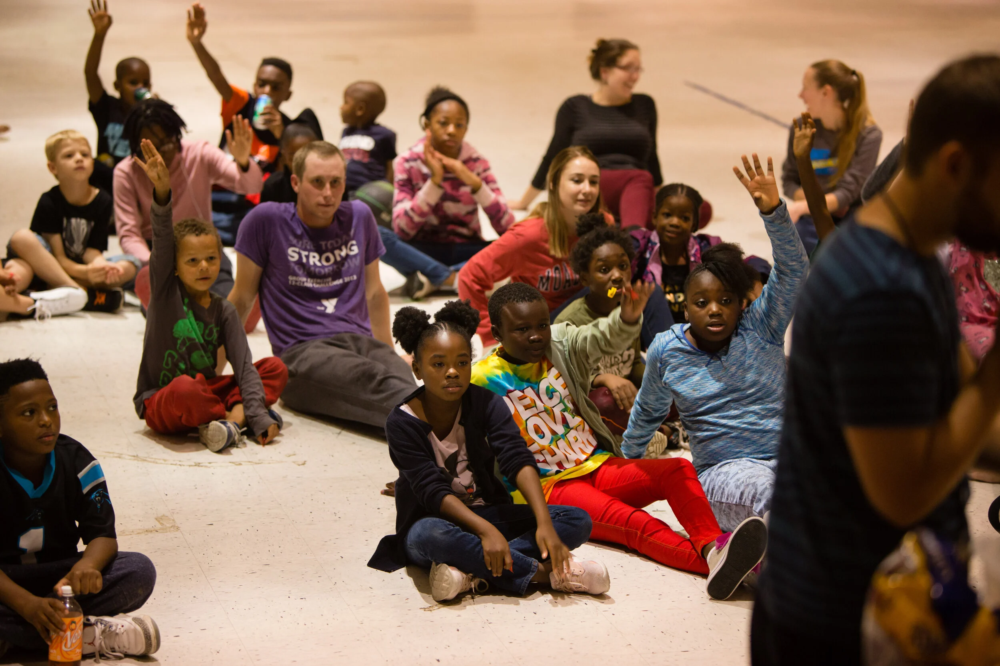
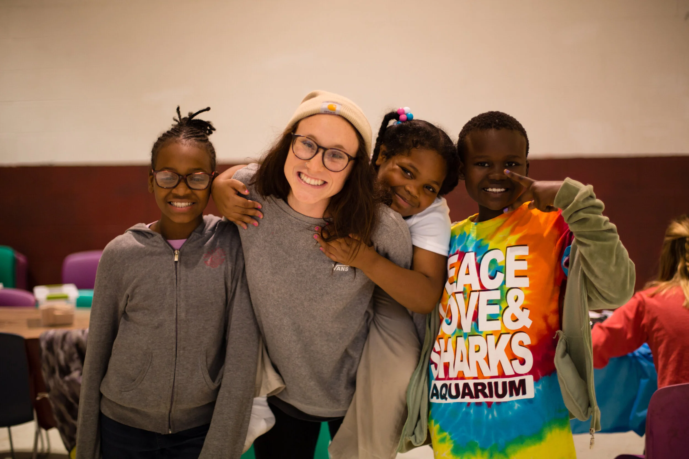
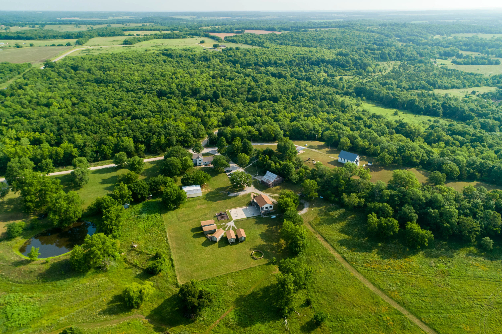

Outreach

Friday Night Outreach
Our Friday Night Outreach is designed for grade-schoolers, with a separate meeting for teens at the Ministry House. We have 4 meetings that occur simultaneously in separate community centers around the inner city, with several hundreds of kids in total, and 5-20 volunteers at each location. Each meeting is led by a staff member or two, and each (ideally) has volunteers assigned for that week. Church groups often get involved in these meetings by bringing the meal (want some menu ideas?), doing a skit, giving a testimony, or just playing along with all the kids. This is a great way to be exposed to Freedom Fire and develop relationships with a few kids. Each week we play games, give a short devotional, share a meal and have a raffle.

If you’d like to volunteer at a Friday Night Outreach, or simply learn more information, contact our Friday Night coordinator, Megan Batey, email volunteer@freedomfire.org or call 816-785-2571.
Be sure to check out our Friday Night Outreach Volunteer Guidelines & Video before volunteering.
Other Weekly Outreaches
We have many other weekly outreaches around the city, including Worship Wagon, Riverview, and The Village. Contact us for more information about getting involved.
Camp Ministry
Each summer we take kids to several camps, including day camps and overnight camps. Our primary location is Camp Shalom. Each week, we take 10-20 kids, focusing on the children who have been involved in our programming throughout the school year, while hiring our best teenagers to help oversee the activities. This is a wonderful chance for our kids to experience the riches of creation, and is a highlight of the year for many, ranging from young grade schoolers to older teens.

Camp Shalom is part of the Freedom Fire family of ministries, and is located approximately 1 hour south of Kansas City, near Mound City, Kansas. This beautiful 120-acre camp is used as a retreat center all year, as well as a summer camp for urban ministries in the region. For more information, visit our Camp Shalom website at www.shalomretreatcenter.org.
For more information on how to volunteer, mail Kevin at kevin@freedomfire.org.